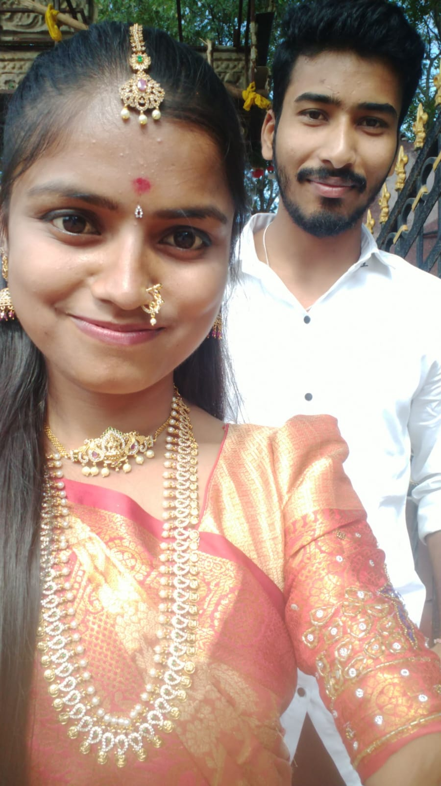

Hi harsha Bagunava Intlo andhar bagunara You are good i hope Nen m aina thappu chesthe sorry M chesina ni mida premathone abha Mi intlo na valla suffer aina vatiki i am really really sorry Ma family tharvtha nen ekkuva preminchindhi ninne so ninnu marichi polekapothunna ninnu alane yaadh cheskuntu unta Seriously nak chala lessons , values ,how to respect etc etc nerpinchav thanks for that Nen ekkada aina neglect chesi undochu kani Ma family and ni vishayam lo epudu negligence ga undaledhu You are the top most priority for me na family tarvatha andhuke ninnu marchipolekapothunna Okaty chepali Ipudu ipudu slow ga accept chesthunna nuv nannu avoid chesthunav ani Adhi ento ni nunchi entha dhooram avdham ani try chesina na valla avvatam ledhu Edho oka chinna object or edhaina memory nitho untey vatini chusinappudalla yaadh vasthunai. Harsha Mana idhari madhya Situation whatever Nen ninnu manchiga chuskunta ani naku nammakam undhi Nuv na mida nammakam unchi undu for damn sure if we together pakka life lo manchiga success avtham Inka godaval antava seriously nuv nak ala godaval ainapude baga nachuthav nuv nannu correct cheyadam naku sardhi chepadam vati nunchi bane nerchukuntunna kani konchem time padthundhi ` Inka na vishayaniki vasthe Nen serious avthana antey Kopam badha santhosham ani ista padda valathone chuyistham Dhanni negative ga thiskoku please this is life anni face chestham Badha lo edho oka mata anna vellipothava Tour lo unapudu e mata anna Apudu ma baba mida kuda masth serious aina Ala ani matladakunda untama prema thagguthadha Time heals everything Please nannu artham cheskova. Naku nuv a set abha mogudu thappu chesthe pellam a ga correct chesedhi Nen nik 50% ok anukuntunna Migitha 50% life journey lo alavatu avtha Harsha Ni mida nammakam tho untunna Nik yaadh undhi anukunta okasari pelli cheskundhama ani adigav nen nikosam enni rojulu aina wait chestha kopam vasthe thittu kottu nuv a ga Nen ninnu na anukunna Ninnu vadalaali ani ledhu abha please please NAKOSAM MALLI RAVA I hope good news tho ni nunchi response vasthadhi anukuntunna Thanks & regards kid , orange , gangireddu , phycho, Bharath Love you Harsha Missing you so much See you soon
